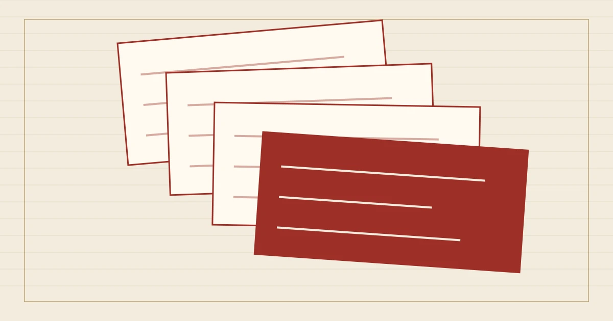

%%A9_EYEBROW%%
%%A9_TITLE%%
%%A9_INTRO%%本叶目录
%%A9_SECTION_1_LABEL%%
%%A9_H2_1%%
%%A9_BODY_1%%
01%%A9_REVISION_1_TITLE%%
%%A9_REVISION_1_TEXT%%
- %%A9_FIELD_1%%
- %%A9_VALUE_1%%
02%%A9_REVISION_2_TITLE%%
%%A9_REVISION_2_TEXT%%
- %%A9_FIELD_2%%
- %%A9_VALUE_2%%
03%%A9_REVISION_3_TITLE%%
%%A9_REVISION_3_TEXT%%
- %%A9_FIELD_3%%
- %%A9_VALUE_3%%
%%A9_SECTION_2_LABEL%%
%%A9_H2_2%%
%%A9_BODY_2%%
%%A9_SECTION_3_LABEL%%
%%A9_H2_3%%
%%A9_BODY_3%%
%%A9_BODY_3_MORE%%
%%A9_FAQ_TITLE%%
%%A9_FAQ_Q_1%%
%%A9_FAQ_A_1%%
%%A9_FAQ_Q_2%%
%%A9_FAQ_A_2%%